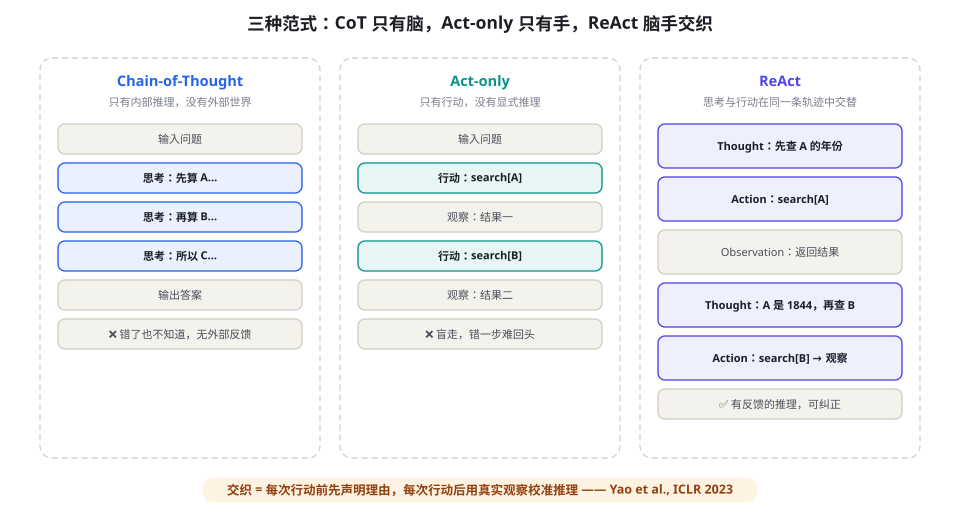

ReAct：推理与行动的交织范式
如果只允许你记住一个 Agent 论文的名字，那应该是 ReAct。这篇 2022 年 10 月发布的工作用最朴素的方式回答了「LLM 如何做成事」：让模型在「思考」和「行动」之间交替，用行动的真实反馈修正思考的方向。本章精读这篇论文、给出可运行的实现，并讨论它如何演化成今天的函数调用范式。
为什么推理需要行动：两条死路的合流
在 ReAct 之前，让 LLM 完成任务有两条各自发展的路线，且都撞上了天花板。第一条：纯推理（CoT）。第 6 章讲过，思维链（Chain-of-Thought）让模型把中间步骤写出来，在数学与常识推理上大幅提升。但 CoT 有个先天缺陷：它只能使用参数里固化的知识。遇到「2020 年奥斯卡最佳影片是谁」这类问题，模型要么记错、要么编造——推理链条越长，错误被包装得越自信。推理变成了「在没有地图的地形上做精致的推演」。
第二条：纯行动（Act-only）。另一条路线让模型直接生成动作指令——搜索、点击、调用 API——由环境返回结果。这解决了知识新鲜度问题，却引入了新问题：没有推理的行动是盲目的。模型看到搜索结果后不知道该提取什么、下一步该搜什么，行为退化成机械的试错。在 ALFWorld（文本 household 任务环境）的实验中，纯行动模型的任务成功率徘徊在 45% 左右，且轨迹常常冗长而混乱。
ReAct（Reason + Act）的主张一句话说完：把两条路线合起来——模型显式地交替生成「思考轨迹」与「环境动作」，思考决定下一步做什么，行动的真实观察反过来校准思考。推理不再是无根据的空转，行动不再是无人驾驶的莽撞。

论文精读：方法、实验与那些常被误引的数字
在四个环境（HotpotQA、Fever、ALFWorld、WebShop）上，用 few-shot 提示让 PaLM-540B 交替生成 Thought-Action-Observation 轨迹。结论：推理与行动的协同（synergy）显著优于任一单独路线，且轨迹的人类可解释性大幅提升。
论文的实验设计值得每个读者细看，因为它示范了「如何证明一个范式有效」：控制变量地拆出 Thought 的贡献。同一模型、同一提示预算，只切换「能否显式思考」：
| 环境 | 标准提示 | CoT | CoT-SC(自洽) | Act-only | ReAct | ReAct-SC |
|---|---|---|---|---|---|---|
| HotpotQA（多跳问答, EM） | 28.7 | 29.4 | 33.4 | 25.9 | 27.4 | 34.2 |
| Fever（事实验证, ACC） | 29.8 | 56.3 | 64.6 | 32.1 | 64.8 | — |
| ALFWorld（具身任务, 成功率%） | — | — | — | 45 | 71 | — |
| WebShop（购物任务, 成功率%） | — | — | — | 30 | 40 | — |
这组数字里有三个常被误读的细节，恰好是理解 ReAct 的关键：
细节一：单路 ReAct 在 HotpotQA 上（27.4）其实低于 CoT（29.4）。原因是当时的搜索工具返回的噪声会「带偏」推理，而纯 CoT 至少不会犯工具错误。真正的赢家是 ReAct + 自洽性（34.2）——行动的价值要配合「多次采样+投票」才能完全释放。这提醒我们：范式优势 ≠ 单次运行优势。
细节二：ALFWorld 上提升最大（45%→71%）。交互式环境里「观察反馈」的信息量最大，推理与行动的协同收益也最大。这解释了为什么 ReAct 在长程交互任务中的优势远大于单轮问答——今天 Agent 领域「工具增强在多跳任务上收益最大」的共识，源头就在这张表。
细节三：错误分析部分的含金量高于主表。论文统计了 ReAct 的失败模式：约一半错误来自搜索结果不对/检索失败（工具问题，不是推理问题），其次是推理偏离后「一条道走到黑」。这个分布直到今天仍然成立——RAG 质量与反思机制正是对这两类失败的工程回应。
论文强调了一个容易被忽略的工程价值：Thought 让轨迹变得人类可审计。出错时你能看到「模型当时在想什么」，甚至在关键步骤人工接管（改一条 Thought，轨迹就能被「掰」回正轨）。这不是小事——今天所有 Agent 可观测性产品（第 79 章）展示的「思考步骤」，其产品原型就是 ReAct 的 Thought 行。同时也要清醒：Thought 是模型的自我报告，不总是它「真实的」计算过程（见第 92 章关于 faithfulness 的讨论）。
完整实现：80 行的双工具 ReAct
下面是一个完整可运行的 ReAct 实现：两个工具（维基百科搜索 + 词条速览），显式的 Thought-Action-Observation 循环。它刻意使用「文本协议」而非函数调用——让你看清范式的本质，之后再对比现代写法。
import re, json, requests
from openai import OpenAI
client = OpenAI()
def wiki_search(q: str) -> str:
"""工具1: 维基百科搜索, 返回摘要片段"""
r = requests.get("https://zh.wikipedia.org/w/api.php", params={
"action": "query", "list": "search", "srsearch": q,
"format": "json", "srlimit": 1}, timeout=10).json()
hits = r.get("query", {}).get("search", [])
return hits[0]["snippet"].replace("<span class=\"searchmatch\">", "")\
.replace("</span>", "") if hits else "没有找到相关词条"
def wiki_lookup(title: str) -> str:
"""工具2: 获取词条前 500 字"""
r = requests.get("https://zh.wikipedia.org/w/api.php", params={
"action": "query", "prop": "extracts", "exintro": 1,
"explaintext": 1, "titles": title, "format": "json"},
timeout=10).json()
pages = r.get("query", {}).get("pages", {})
for p in pages.values():
return p.get("extract", "")[:500]
return "没有该词条"
SYSTEM = """你使用以下格式解决问题(严格逐行):
Thought: [关于下一步的推理]
Action: [必须是 search 或 lookup 之一]
Action Input: [工具输入]
观察结果会以 Observation: 给出。当你能给出最终答案时:
Thought: [最后确认]
Final Answer: [答案]
示例:
Question: 《红楼梦》的作者生于哪一年?
Thought: 我需要先确认《红楼梦》的作者,再查其出生年份。
Action: search
Action Input: 红楼梦 作者
Observation: 《红楼梦》作者是曹雪芹…
Thought: 作者是曹雪芹,现在查他的出生年份。
Action: search
Action Input: 曹雪芹
Observation: 曹雪芹(约1715年-约1763年)…
Thought: 已获得出生年份约1715年。
Final Answer: 《红楼梦》作者曹雪芹约生于1715年"""
def react(question: str, max_steps: int = 8) -> str:
messages = [{"role": "system", "content": SYSTEM},
{"role": "user", "content": f"Question: {question}"}]
for step in range(max_steps):
text = client.chat.completions.create(
model="gpt-4o-mini", temperature=0,
messages=messages).choices[0].message.content
print(f"--- 第{step+1}轮 ---\n{text}")
if "Final Answer:" in text: # 终止条件
return text.split("Final Answer:")[-1].strip()
m = re.search(r"Action:\s*(\w+)\s*\nAction Input:\s*(.+)",
text) # 解析动作
if not m:
messages.append({"role": "assistant", "content": text})
messages.append({"role": "user",
"content": "格式错误,请严格按 Thought/Action/Action Input 输出"})
continue
tool, arg = m.group(1), m.group(2).strip()
obs = wiki_search(arg) if tool == "search" else wiki_lookup(arg)
messages.append({"role": "assistant", "content": text})
messages.append({"role": "user", "content": f"Observation: {obs}"})
return "达到步数上限,任务未完成"
print(react("确认《三体》获得雨果奖的年份,以及该年颁奖地"))这段代码值得逐块咀嚼，因为它浓缩了所有 Agent 框架的内核：
- 格式契约放在系统提示词里，并附带一条完整示例——few-shot 示例是格式稳定性的第一保障（第 6 章）。
- 终止条件是显式协议（出现
Final Answer:），外加步数上限兜底——第 15 章讲过的「双刹车」。 - 解析失败不崩溃，而是把格式错误作为观察喂回去让模型自我纠正——这是比抛异常更好的降级路径。
- 观察结果以 user 消息回填，而非 tool 角色——文本协议的固有做法。现代函数调用 API 把这一切结构化了，见下节。
轨迹解剖：一条真实运行的逐行点评
下面是上一节代码处理「确认《三体》获得雨果奖的年份，以及该年颁奖地」时的真实轨迹（有删节），我们逐段点评——学会读轨迹是调试 Agent 的第一基本功：
--- 第1轮 ---
Thought: 《三体》是刘慈欣的科幻小说,曾获雨果奖。我需要确认获奖年份,
以及该年世界科幻大会的举办地。
Action: search
Action Input: 三体 雨果奖
Observation: 《三体》是刘慈欣创作的长篇科幻小说…2015年获得
第73届雨果奖最佳长篇小说奖… ← ① 一次检索同时命中两个子问题的一半
--- 第2轮 ---
Thought: 已确认2015年获第73届雨果奖。现在需要确认该届世界科幻大会
的举办地。 ← ② 任务被正确分解为两跳
Action: search
Action Input: 第73届世界科幻大会 举办地
Observation: 2015年8月,第73届世界科幻大会在美国华盛顿州斯波坎举行…
--- 第3轮 ---
Thought: 两个事实都已确认:2015年获奖,颁奖地斯波坎。可以作答。
Final Answer: 《三体》于2015年获第73届雨果奖最佳长篇小说奖,
该届世界科幻大会在美国华盛顿州斯波坎举行。 ← ③ 显式确认后终止,而非立刻抢答三个值得注意的行为模式：①好的检索查询能一次覆盖多个子问题——工具调用的效率差异主要来自查询质量，这解释了为什么第 20 章在查询改写上花大量篇幅；②模型在 Thought 中显式维护「已解决/待解决」的任务清单——这是规划能力的微缩形态，第 18 章会把它正规化；③终止前的「最后确认」步减少了抢答错误——你在自己领域的等价物是「交付前的 checklist」。
现代形态：Function Calling 如何「吞掉」了 ReAct
2023 年 6 月之后，主流模型厂商把 ReAct 的「Action」部分产品化成了函数调用：工具以 JSON Schema 声明，模型输出结构化的调用意图，解析不再依赖正则。一个有意思的问题是：Thought 去哪了？
答案是：它没有被删除，而是被「隐式化」了。今天的推理模型（o1、DeepSeek-R1、Claude with extended thinking）在输出工具调用之前，会在内部（或以受控形式展示）完成思考；而传统模型的「思考」则退化为工具调用前后的简短文本。表面上 ReAct 协议消失了，但「思考→行动→观察→再思考」的循环结构原封不动——变的只是传输格式。理解这一点，你就能看穿几乎所有 Agent 框架的宣传语：无论叫 Plan-Act 还是 Agentic Loop，内核都是 ReAct。
tools = [{
"type": "function",
"function": {
"name": "wiki_search",
"description": "搜索维基百科,返回最相关词条的摘要", # 描述=给模型看的文档
"parameters": {
"type": "object",
"properties": {"query": {"type": "string",
"description": "搜索关键词,支持自然语言"}},
"required": ["query"],
},
},
}]
def react_modern(question: str, max_steps: int = 8) -> str:
messages = [{"role": "user", "content": question}]
for _ in range(max_steps):
msg = client.chat.completions.create(
model="gpt-4o-mini", messages=messages,
tools=tools).choices[0].message
if not msg.tool_calls: # 模型选择直接回答=终止
return msg.content
messages.append(msg)
for tc in msg.tool_calls: # 支持一次多个并行调用
args = json.loads(tc.function.arguments)
obs = wiki_search(**args)
messages.append({"role": "tool", "tool_call_id": tc.id,
"content": obs})
return "达到步数上限"结构化协议带来稳定性的同时，也带来一个陷阱：很多团队完全关掉了模型的「显式思考」，只留工具调用——在简单任务上没问题，但在多跳推理任务上，把 Thought 写出来的版本仍常常更稳（思考外置 = 更多的计算 token 与自我检查机会，见第 43 章推理范式的讨论）。工程建议：复杂任务的工具调用前，仍要求模型先输出一段简短的计划文本；简单任务则省略以降成本。
多跳问题的力学：ReAct 为什么擅长它们
「A 的作者的出生城市在 B 国的哪个州」这类多跳问题有一个共同结构：下一跳的查询取决于上一跳的结果。这决定了它们的失败模式也特殊——错误不是均匀分布的，而是连乘的：若每跳正确率 90%，四跳任务的端到端正确率只有 0.9⁴ ≈ 66%。理解这个连乘结构，你就理解了 Agent 工程的三条推论：
推论一：减少跳数比优化每一跳更划算。把两跳合并为一次设计良好的工具调用（如「查询作者及其出生地」的专用 API），端到端正确率从 0.81 升回 0.9。工具设计的最高境界是让常见任务一跳可达。
推论二：中间结果的验证是杠杆率最高的投入。在跳与跳之间加一次廉价的「这个结果能支撑下一步吗」检查，把每跳的错误拦截在连乘之前。这正是 Self-RAG（第 21 章）与过程奖励模型（第 46 章）的共同直觉。
推论三：观察的真实性决定上限。多跳链路中，一次幻觉观察会污染其后所有推理——这再次回应了本章失败模式清单的第一条。
谱系与变体：ReAct 之后的三年
ReAct 之后的演化大致沿四个方向，它们不是替代关系，而是不同瓶颈下的分工：
| 方向 | 代表工作 | 解决的瓶颈 | 本书章节 |
|---|---|---|---|
| 搜索式增强 | Tree of Thoughts (2023)、LATS (2023) | 单轨迹容易「一步错步步错」→ 树状探索 + 回溯 | 第 93 章 |
| 反思式增强 | Reflexion (2023)、Self-Refine (2023) | 失败后不总结教训 → 语言化反馈进入下一轮 | 第 22 章 |
| 规划式增强 | Plan-and-Execute、HuggingGPT (2023) | 边想边做容易短视 → 先全局规划再执行 | 第 18 章 |
| 训练式内化 | Toolformer (2023)、AgentTuning/RLVR (2023-2025) | few-shot 提示不可靠 → 把范式训练进权重 | 第 44 章 |
一个实用的判断：模型越强，系统越「薄」。2023 年你需要在提示词里塞三条轨迹示范才能稳定输出 ReAct 格式；2026 年的旗舰模型零样本即可遵循工具协议。你的工程重心应该从「格式祈祷」转移到「上下文质量、工具设计与验证闭环」——这也是全书后半部分的主战场。
一则历史注脚：谁发明了「推理 + 行动」
值得知道的是，ReAct 并非凭空出现。它站在三个传统的交汇处：经典 AI 的「感知-行动循环」（第 3 章第一幕）、强化学习的 agent-environment 接口（第 91 章），以及 2022 年前后社区的自发探索——同一时期，Sel et al. 的「Toolformer 思路」、Serol Py 的早期 prompt 实验与 LangChain 的初始版本都在摸索「让模型调用工具」的不同协议。ReAct 的贡献不在于第一个想到，而在于第一个用受控实验证明了「显式推理」与「外部行动」的协同效应，并把协议简化到一段提示词就能复刻。这个「简单到能被千万人复刻」的品质，才是它成为范式而非一篇普通论文的真正原因——也值得每一个想做出影响力工作的研究者记住：简单性不是深度敌人，而是传播的前提。
认知视角：ReAct 为什么符合直觉又反直觉
从认知科学的角度看，ReAct 的交替结构对应人类解决陌生问题的真实过程：行动检验猜想（试错学习）与内部推演（心理模拟）的交替。Kahneman 的「系统 1 / 系统 2」框架提供了一个不太严格但好用的类比：Thought 是缓慢的系统 2，Action 是接触世界的传感运动接口，Observation 则是喂回系统 2 的新证据。纯 CoT 相当于闭着眼睛跑系统 2（缺乏证据更新），纯 Act 相当于只有系统 1（条件反射式地应对）。
但它同时又是「反直觉」的——对 seasoned 软件工程师而言。传统软件把「决策逻辑」编译进代码，测试在部署前完成；ReAct 把决策延迟到运行时，用真实环境当测试场。这意味着：Agent 的「正确性」不再是部署时的属性，而是每次运行时的属性。质量保证的重心从「代码审查」转移到「运行时护栏 + 事后审计 + 持续评测」，这正是本书工程篇（第 50-57、79-80 章）的编排逻辑。理解了这次重心的迁移，你就理解了 Agent 工程与传统软件工程在方法论上的根本分野。
还有一层实践含义值得点破：ReAct 循环的每一次迭代，都是一次「假设-检验」。工程师可以主动利用这一点——在系统提示词里要求模型把每个 Thought 写成可证伪的形式（「我假设 X，将用 Y 验证」），轨迹的可读性与纠错率都会明显改善。这个小技巧的成本是零，收益却随任务复杂度增长。
中文场景适配：工具与编码的额外功课
以中文为主要语言的团队在实现 ReAct 时，有三处需要额外注意。其一，检索工具的中文质量：维基百科中文语料远小于英文版，生产系统通常需要接入混合检索（如 Bing/Google API、或自建 ES/向量库），并把「搜索词改写」做进工具层——模型生成的中文查询直接命中率的差异可以到数倍。工具描述里写清楚「支持自然语言中文查询」，并在 few-shot 中给出中文查询示例，稳定性会显著提升。
其二，编码与截断：中文内容在 HTTP 响应与日志中容易出现转义混排，工具层应统一做 UTF-8 规范化；同时中文 token 压缩率低（第 5 章），「观察过载」在中文场景出现得更早——对工具返回内容做摘要的阈值要相应调低。
其三，Thought 的语言一致性：模型有时会在中文任务中「滑」向英文思考。多数情况下不影响正确性，但会降低可审计性并轻微影响风格。在系统提示词中显式要求「请全程使用中文思考」，或在示例轨迹中全部使用中文 Thought，即可基本消除。
成本与延迟画像：一次 ReAct 运行的账本
以中等工作量（3~6 轮循环）的任务为例，用 2026 年主流 API 价格量级做一个工程估算（数字会过时，结构不会——换算比例请定期校准）：
| 成本项 | 典型占比 | 说明与压缩手段 |
|---|---|---|
| 输入 token（历史 + 观察回填） | 60%~80% | 随轮次平方级增长的重头；压缩观察、滚动摘要可省一半以上（第 23 章） |
| 输出 token（Thought + 工具参数） | 5%~15% | 最贵的部分；简单任务压缩 Thought，复杂任务保留 |
| 工具执行（网络/沙箱） | 10%~30% 的延迟 | 并行调用与缓存（第 17、78 章）是主要手段 |
| 系统开销（重试/解析） | <5% | 函数调用协议已把它压到接近零 |
由这个结构得出一个反直觉结论：「多想少查」常常比「少想多查」更便宜。一次高质量的 Thought 若能省掉两次无效搜索，净节省是四份输入 token 的重复传输（历史随轮次重复计费）。这与第 43 章「推理时多花算力换正确率」的范式转向在经济学上完全一致。
反直觉的一节：什么时候不该用 ReAct
本章一直在讲怎么用好 ReAct，但同样重要的是识别它的边界。以下四类场景，ReAct（乃至 Agent 化）通常不是正确答案：
- 输入空间封闭且规则明确的任务（表单校验、格式转换、固定报表）：规则引擎或传统代码更快、更便宜、100% 可预测。模型在这里只会引入方差。
- 延迟敏感的交互路径（输入联想、首屏应答）：多轮循环的延迟是秒级到十秒级。正确做法是「快通道 + 慢通道」：常规路径走模板与缓存，只有长尾请求进入 ReAct 通道。
- 单次即可完成的生成任务（翻译一段话、改写一封邮件）：加上循环只会增加成本与翻车面。一个精心设计的单提示（第 6 章）就是全部所需。
- 验证成本高于生成成本的场景：Agent 的价值公式粗略来说是「自主性收益 − 验证成本」。让 Agent 生成一份要花两小时人肉核对的报告，净收益可能为负——此时不如让模型生成草稿、人来做唯一的决策步。
在给任务上 ReAct 之前，回答三个问题：任务的「意外密度」高吗（输入与路径是否难以预先枚举）？每步行动的观察真实可得吗（工具数据质量）？验证成果的成本可接受吗（评测与人工兜底）？三个「是」才值得上循环；否则从工作流开始（第 14 章的自主性阶梯），让证据推动你升级。
落地检查单：把 ReAct 带进你的项目
最后给一份按顺序执行的检查单。它把本章内容压缩成可勾选的动作，适合作为新 Agent 项目的启动流程：
| # | 动作 | 验收标准 | 对应章节 |
|---|---|---|---|
| 1 | 用第 14 章阶梯确认任务需要循环自主 | 写出一句话理由，而非「大家都用 Agent」 | 第 14 章 |
| 2 | 盘点并设计最小工具集（2~4 个） | 每个工具描述 ≤ 3 句话且含输入输出示例 | 第 17 章 |
| 3 | 跑通文本协议或函数调用循环 | 10 个测试任务 ≥ 7 个端到端成功 | 本章 |
| 4 | 安装两个刹车：步数上限 + 成本上限 | 人为制造死循环，确认能优雅退出 | 第 15 章 |
| 5 | 接入轨迹日志（每轮 Thought/Action/Observation 落盘） | 任意一次运行可完整回放 | 第 79 章 |
| 6 | 建立 20 条起步评测集，之后每周扩充 | 每次改提示词前后都能跑出对比数字 | 第 13、50 章 |
| 7 | 对失败案例做归因分类（工具/检索/推理/格式） | Top 失败类别有明确对策并进入下轮迭代 | 本章 + 第 22 章 |
失败模式清单与对策
把 ReAct 跑起来只要一小时，让它稳定地跑起来需要认识这五种失败模式（按出现频率排序）：
- 1. 幻觉观察（最危险）：模型自己编造 Observation 继续推理——通常发生在解析失败或工具结果为空时。对策：观察内容永远由代码注入并打上明确标记；空结果要显式说明「无结果」而非留白。
- 2. 原地打转：同一搜索换个措辞反复进行。对策：轨迹去重检测（同一工具+相似参数连续 N 次即告警/强制换策略）；在系统提示词中注入「你已尝试过 X 次类似搜索」的计数反馈。
- 3. 格式漂移：长轨迹后期格式走样导致解析失败。对策：现代协议（函数调用）天然免疫；文本协议则应在 few-shot 示例中包含「第 6 轮、第 8 轮」的深轨迹示例，或在检测到漂移时重申格式。
- 4. 过度思考：简单问题写十轮 Thought，成本失控。对策：按任务难度分级路由（第 78 章）；对已确认简单的请求减少思考预算。
- 5. 观察过载：一次搜索返回 3000 词塞满上下文。对策：工具侧截断/摘要（返回 top 片段 + 「完整内容已存盘到 X」的指针），详见第 23 章上下文工程。
运行上面的实现并做三个改动，观察行为变化：(1) 把系统提示词里的示例删掉，统计格式错误率；(2) 把 Observation 的注入从 user 消息改为拼接进 assistant 消息，看轨迹是否更容易混乱；(3) 把 temperature 从 0 调到 1.0，数一数「原地打转」出现的频率。这三个实验会替你记住本章 80% 的内容。
本章小结
- ReAct = 推理与行动的交替：Thought 决定下一步，Action 与 Observation 提供真实反馈，两者协同（synergy）是效果来源。
- 论文的关键细节：单路 ReAct 在问答上不一定赢 CoT，配合自洽性才释放优势；交互式环境收益最大；错误多来自工具与检索而非推理本身。
- 80 行文本协议实现展示了范式的全部要素：格式契约、显式终止、解析失败喂回、步数上限。
- 现代函数调用是 ReAct 的结构化形态——循环未变，Thought 被隐式化；复杂任务仍建议保留外置思考。
- 多跳任务的错误按跳数连乘：减少跳数、中间验证、保证观察真实性是三条最高杠杆的改进路径。
- 五大失败模式：幻觉观察、原地打转、格式漂移、过度思考、观察过载——每一条都有对应工程对策。
自测题
- 为什么单路 ReAct 在 HotpotQA 上低于 CoT，但 ReAct-SC 反超 CoT-SC？这对「范式优势」的评估方法有什么启示？
- 文本协议与函数调用协议各损失了什么、得到了什么？什么场景下你仍会选择文本协议？
- 「幻觉观察」为何比「幻觉知识」更危险？用本章代码说明你会在哪一行防御它。
- ReAct 的四条演化方向分别解决什么瓶颈？你的当前项目最需要哪一条，为什么？
- 以 0.95 的单步正确率执行一个五跳任务，端到端正确率是多少？分别用「合并跳数」与「中间验证」两种策略设计改进，各自把正确率提升到多少？
参考文献与延伸阅读
- Yao, S. et al. (2022). ReAct: Synergizing Reasoning and Acting in Language Models. ICLR 2023. arXiv:2210.03629
- Wei, J. et al. (2022). Chain-of-Thought Prompting Elicits Reasoning in Large Language Models. NeurIPS 2022. arXiv:2201.11903
- Yao, S. et al. (2023). Tree of Thoughts: Deliberate Problem Solving with Large Language Models. NeurIPS 2023. arXiv:2305.10601
- Shinn, N. et al. (2023). Reflexion: Language Agents with Verbal Reinforcement Learning. NeurIPS 2023. arXiv:2303.11366
- Schick, T. et al. (2023). Toolformer: Language Models Can Teach Themselves to Use Tools. arXiv:2302.04761
- OpenAI (2023). Function Calling and other API updates. openai.com/blog